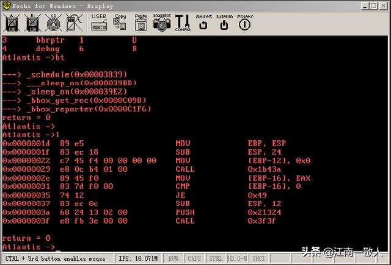
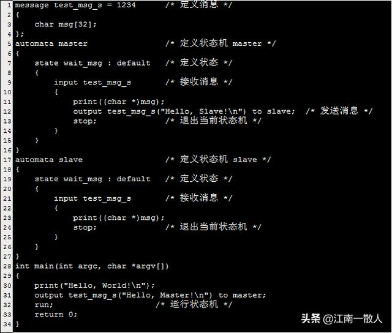
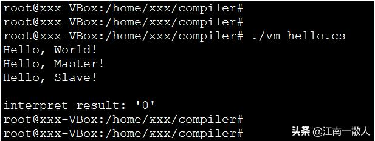

你真的理解"Hello world"吗？ 从编译链接到OS内核系列专题
江南一散人 2020-04-20 07:19:39
本文是旨在讲解编译、链接、OS内核等系统知识的系列文章的第一篇前言部分，后续会有更多精彩内容！
转眼间，做程序开发已经超过十年了。这么多年是眼睁睁地看着头发一天天地减少，额头一天比一天亮，脊椎越来越不好啊。
个人经历和心得体会
这十多年间，做过OS内核开发，虚拟机，电信级的分布式集群系统，嵌入式，高性能中间件，系统性能优化等各种工作。
时间越久，对学无止境的体会越深，越来越能理解了那句"学得越多，越感到无知"。
从接触计算机软件开发开始，我就一直好奇于计算机内部的工作原理，一直有着各种各样的疑问，比如从计算机上电到看到操作系统界面，中间都做了什么事情？我们平时用C/C++、JAVA、Python等编程语言开发程序软件，那这些编程语言本身又是用怎么开发的呢？我们写的源码文本文件，是如何转变成可执行文件的？这些可执行文件又是怎么被操作系统加载执行的呢？
有了疑问，一定会有答案。于是，我就一直尝试着各种方法寻找这些问题的答案。可后来发现，费了九牛二虎之力搞清楚一个疑问之后，紧接着就会有第二个第三个甚至更多新的疑问出现。越深入研究，自己的疑问越多，发现自己需要学习的东西越多。
Atlantis OS Kernel
几年前，在尝试搞清楚一个程序究竟是如何被操作系统执行的过程中，我逐渐被操作系统内核深深吸引了。
为了弄清楚OS内核是如何工作的，我疯狂查阅各种书籍资料，分析内核代码，几乎达到了痴迷的程度。
后来，甚至在工作之余，利用晚上下班和周末时间，自己开始尝试从零实现了一个OS内核。终于，经过了大半年的努力，在查阅了大量资料，分析了Linux、VxWorks、以及国外一些大牛开发的OS内核代码之后，一个玩具级的OS内核终于开发出来了。
虽然只是玩具，但麻雀虽小五脏俱全，OS内核的所必备的一些基本功能都有支持，如boot、内存管理、中断管理、进程管理和调度、IPC、文件系统、磁盘驱动、键盘驱动、简单的终端等。来张截图吧：

Atlantis Kernel 欢迎界面
是不是满满的VxWorks风呢 :-)
随后，为了研究调试器的工作原理，又在这个OS内核上实现了一个小的调试器，支持基本的断点、单步执行、反汇编、内存dump等功能。再来张图：

Atlantis 调试界面
一个编译器
再后来，我又渐渐地迷上了编译器。为了搞清楚编译器的原理，我又开始自己动手从零开始实现了一个编译器。
目前已经实现了手写的词法分析器，语法分析器、语义分析、基于AST(抽象语法树)的interpreter(程序解释器)、基于寄存器的虚拟机等部件。
这个编译器作为一个业余项目，目前仍然在持续开发中，但是已经支持了C语言的大部分语法，还有一些我觉得比较cool的feature，如语言内置的有限状态自动机、消息通信、并行计算、定时器等针对分布式系统开发的feature。
还有很多feature也在计划当中，如类的支持，异常处理，JIT(Just-In-Time)，机器码生成等，等时间充裕的时候，也会逐个实现。
老规矩，来个"Hello, World!"感受一下吧：

"Hello, World!" 示例
简单解释下：
- 第1行 message关键字定义了一个ID为1234的消息test_msg_s，这个消息只有一个字段，是大小为32的字符数组。
- 第5行 automata关键字定义了一个名字为master的状态机
- 第7行 state关键字定义了一个名字为wait_msg的状态，一个状态机里可以有多个不同状态，状态之间可以相互迁移。这里为了简单，只定义了一个状态
- 第9行 input关键字表示等待接收test_msg_s的消息，一个状态里可以接收多个不同的消息，这里为了演示方便，只接收一条消息
- 第11行 接收到消息后，用内置函数print把消息内容打印出来
- 第12行 output关键字表示发送一条消息test_msg_s给名字为slave的状态机
- 第13行 stop关键字表示结束当前状态机，也就是master状态机
- 第17~27行 定义了一个名字为slave的状态机，与master状态机类似
- 第28~34行 定义程序入口main函数，其中第32行表示开始运行状态机
这便是一个完整的可运行的程序了，没有任何其它的依赖。
整个程序很简单，就是定义两个状态机master和slave，main函数里面打印出"Hello, World!"后，发一条test_msg_s给master状态机，master状态机默认处于wait_msg状态，等接收到消息后，把消息内容打印出来，然后发送一条消息给slave状态机，然后退出。同样，slave状态机收到消息把消息打印出来，然后退出。程序执行结果如下所示：

越是看似简单的东西，背后越不简单
这一路走来，我越来越体会到，越是看似简单的东西，其背后往往隐藏着非常复杂的机理。正是由于其背后这一系列强大而复杂的支持系统的存在，才使得我们在做这件事情的时候变得如此轻松简单，甚至可以不需要任何大脑思考的过程。
越是一些如呼吸一般被我们习以为常的东西，越是容易被我们忽略，我们把它们的存在当做是理所当然，慢慢产生依赖，但一旦离开它们，我们会马上变得不适应，甚至无所适从。
拿我们日常写代码使用的各种各样的IDE为例，现在流行的各种IDE，如Virtual Studio Code, SubText, Eclipse等，几乎无一例外，全都提供了一系列提高开发效率的辅助功能，如语法高亮、自动补全，上下文关联检索，错误检查等功能。我们对这些功能早已习以为常，认为这些都是IDE理所当然必须提供的基本功能。
以至于如果现在让我们去使用一个没有语法高亮，没有自动补全功能的IDE，我们便会各种不适应，甚至难以忍受。设想一下，如果现在要求你必须使用Windows记事本编写代码，你还能愉快的敲代码吗？你觉得你最多能坚持多久呢？离发疯还远吗？
那么，大家有没有想过，这些我们自认为的“基本功能”是如何实现的呢？这其中涉及到哪些技术？实现这些功能的难度有多大？如果要求你自己动手实现一套这样的功能，能做到吗？
你对Hello World究竟了解多少呢？
同样，对于"Hello, World!"，我们再熟悉不过了，几乎所有人都是被它带进编程的大门的，它是如此的简单，我们甚至闭着眼睛都能写出来。但它真的就仅仅是往控制台窗口上打印一句"Hello, World!"字符串那么简单吗？你有没有思考过隐藏在"Hello, World!"背后的那些并不为大多数人所知的技术呢？
不妨尝试回答下下面几个问题，看你是否能够一下子给出一个清晰明确的答案呢？
- 编译器把“Hello, World!”从C语言源码转换成可执行文件，中间经历了哪些过程？每个过程具体做了什么呢？
- 对于可执行文件中都有哪些内容呢？你对ELF文件格式了解多少呢？
- gdb调试程序的时候，是怎么把可执行文件和源代码关联到一起的呢？
- 程序被加载起来之后，在内存中的布局是什么样的呢？
- C语言程序的全局变量、局部变量、静态变量、函数体、参数、字符串分别是在哪里存储的呢？函数参数是怎么传递的？返回值呢？
- “Hello, World!”是怎么运行起来的呢？入口地址是什么呢？操作系统是怎么知道这个地址的呢？
- C语言程序真的是从main()函数开始执行的吗？main()函数之前发生了什么？
- main()函数的参数是什么吗？它的参数是谁传递过去的呢？
- main()函数执行完后，程序真的就结束了吗？main()函数的返回值返回到哪里了呢？
- “Hello, World!”是怎么打印出来的呢？真的是printf()函数打印出来的吗？
- 你知道printf()函数的原型是什么吗？它跟普通的函数有什么区别呢？是如何实现的呢？
- 程序调用printf()之后究竟发生了什么？它是怎么跟OS内核联系起来的呢？
- 你知道动态链接库和静态链接库的区别吗？程序执行的时候，是怎么找到动态链接库里的函数呢?
- 你能够在不中断一个程序正常执行的情况下，替换掉程序中的某个函数吗？
对上面的问题，如果你确信能够非常清晰明确地解释清楚每个细节，那么说明你对计算机系统的基本原理和程序的执行原理已经基本掌握了。
如果你对其中一些问题不是很了解，或者有些东西只知其然而不知其所以然，甚至都没有想到一个简单的"Hello, World!"背后具体还有这么多值得思考的问题，那也不要紧。
接下来我会更新一系列文章，会从编译，链接、加载到程序的执行过程，从ELF文件格式到动态链接库、静态链接库，从C语言程序各要素的基本存储到操作系统内存管理，详细解析其中涉及到的每一个技术细节。力争通过这一系列专题的讲解，让你对计算机程序运行背后的隐藏机制有一个全面而清晰的理解。
Hello World背后的故事系列文章
计划要更新的内容，初步规划大纲如下：
前言 (本篇)
第1章 编译器的工作原理
第2章 链接器的工作原理
第3章 深入分析ELF文件格式
第4章 动态链接库与静态链接库
第5章 程序的数据存储
第6章 函数参数、返回值的传递过程
第7章 虚拟内存
第8章 程序的加载和重定位
第9章 程序在内存中的布局
第10章 带你重新认识main()函数
第11章 从应用程序到系统调用
第12章 程序的退出和资源回收
后续根据需要可能会进行细微调整，可能会添加新的内容。另外，有些章节涉及的知识点比较多，为了尽可能解释清楚，会分为几篇文章进行讲解。
我认为这些都是作为程序员必须要掌握的东西，理解了这些知识之后，会完善自己的技术知识体系，增强自己程序开发调试的能力都大有裨益。相信掌握这些知识以后，你对整个计算机技术的体系结构会有更加深刻的理解。